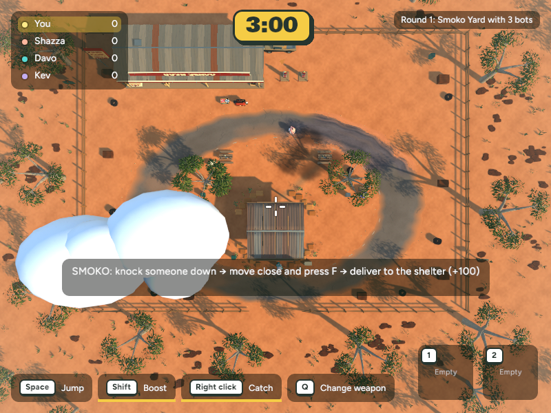
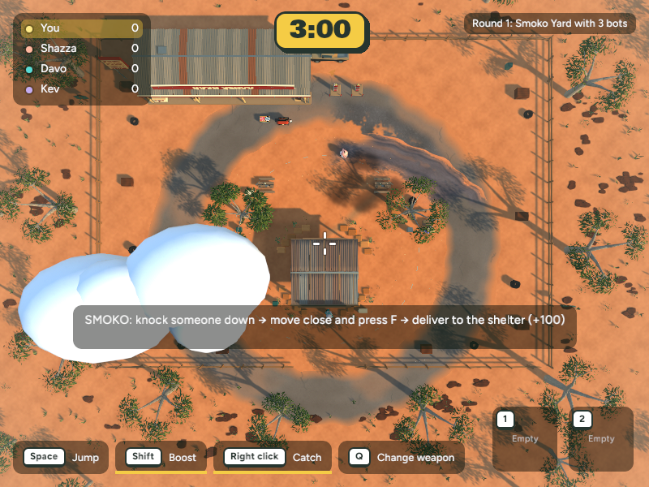

Smoko Arena: rounder circuit prototype
Approved for publication. This pass changes the Bush Servo arena road footprint to a circular annulus around the shelter, closer to the supplied concept. It keeps the existing props and playable yard bounds. It does not yet recreate the concept's servo buildings, detailed scenery, lighting, or art direction.
 Concept art · Bush Servo
Concept art · Bush Servo

Before · compressed elliptical road

Prototype · circular road footprint
What changed
- Replaced the compressed oval asphalt with a circular ring centered at
(0, 6.5), with 16.5 m inner and 19 m outer radii.
- Moved the lane dashes and embedded shoulder stones onto the same circular path.
- Shared the road dimensions with the custom Bevy mesh so its textured mesh follows the same footprint as the map layout.
- Kept gameplay ground flat; the road remains visual only. Existing props, colliders, car, and shelter have not been moved.
Checks
cargo test --workspace passed: 263 app tests and 452 core tests, with one pre-existing ignored test. A screenshot review capture was regenerated after the mesh change. The existing ute tray jump check remains in the 10 November capture pack; no jump code changed in this art pass.
The screenshot's HUD and clouds obscure part of the circuit, so judge the footprint from the visible road edges and compare with the concept. The map remains a prototype and the other concept-art graphics are not part of this pass.
Next: continue toward the concept by matching the servo frontage and shelter surround, then refine perimeter fencing, rock groupings, and warm red-earth lighting as separate reviewable passes.